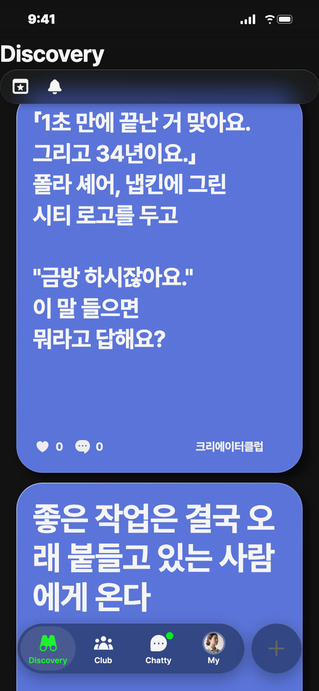
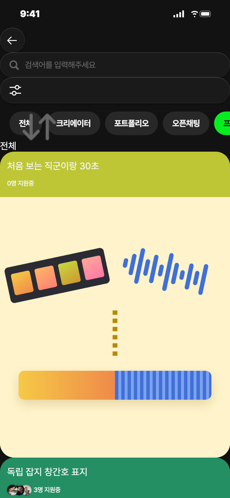
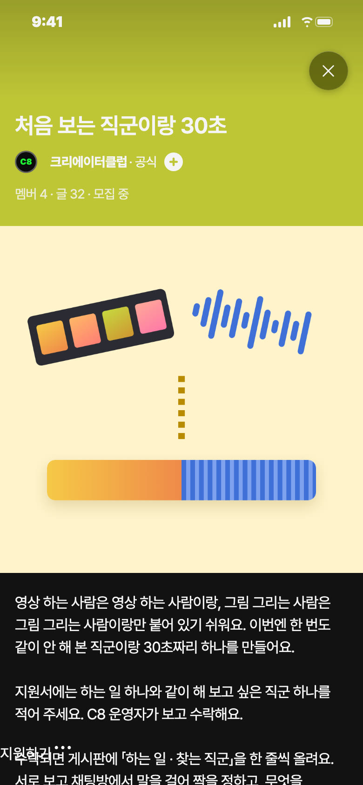
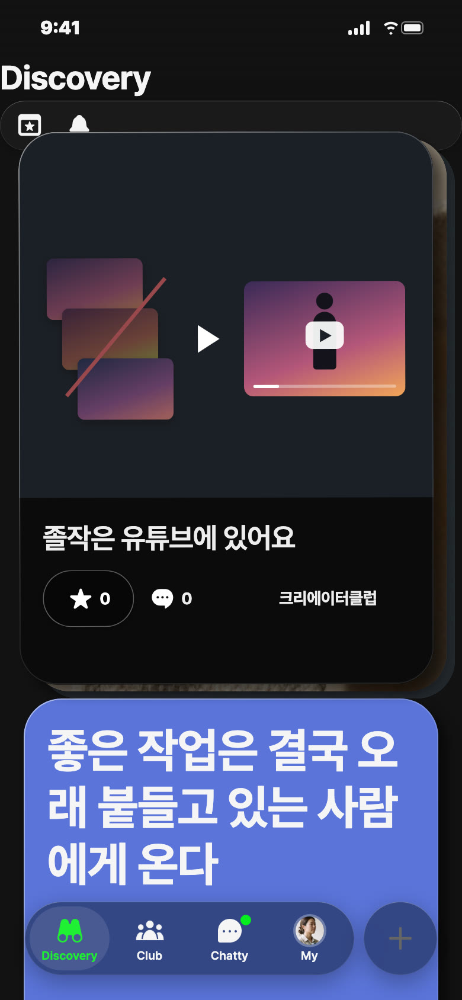
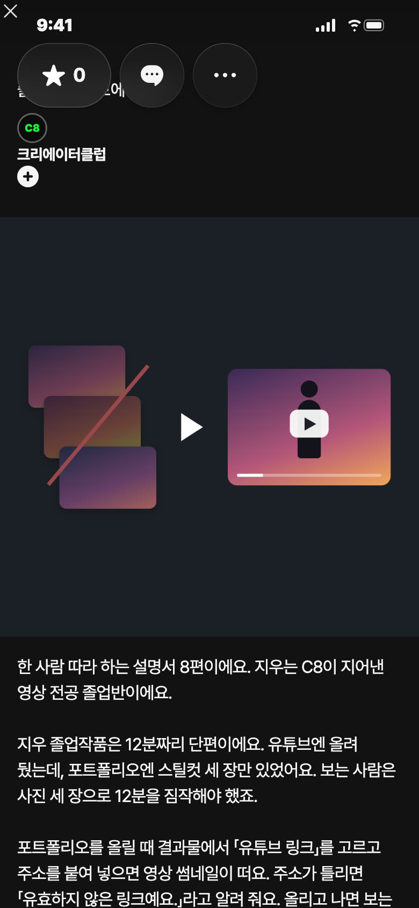

C8 앱 게시 시안 · 11/19(목) — 오늘 추천: 영감 · 창작자 말 그대로
오늘 추천 · 영감 · 낮 12시 · 파랑

칸: 창작자 말 그대로 × 일 받기(값)
왜 오늘: 목요일 1순위 — 연말 외주 철에 「금방 하잖아요」를 듣는 사람이 많아요
보낼 사람: 외주 견적 깎인 친구에게 「이거 봐, 폴라 셰어도 들었대」
받고 싶은 댓글: 「'금방 하려고 4년 배웠어요' 했더니 웃고 넘어가시더라고요」
영감 글
「1초 만에 끝난 거 맞아요. 그리고 34년이요.」 폴라 셰어, 냅킨에 그린 시티 로고를 두고 "금방 하시잖아요." 이 말 들으면 뭐라고 답해요?
비축 · 프로젝트 · 노랑


칸: 함께 만들기 × 낯선 짝 (지난 7일 빈 칸)
왜 비축: 수요일 자리 후보, 26.46.0 기준 — 운영자·46 출시일은 게시 전 확정
보낼 사람: 음악 하는 친구에게 「너 영상 하는 사람이랑 해 본 적 없지, 이거 해」
받고 싶은 지원 채팅: 「비트 만들어요. 그림이나 일러스트 하는 분이랑 해 보고 싶어요」
제목
처음 보는 직군이랑 30초
카테고리
함께 만들기
모집 내용
하는 일 하나 · 같이 해 보고 싶은 직군 하나 · 12/4까지 지원 · 12/27까지 완성 · 상품 없음
설명
영상 하는 사람은 영상 하는 사람이랑, 그림 그리는 사람은 그림 그리는 사람이랑만 붙어 있기 쉬워요. 이번엔 한 번도 같이 안 해 본 직군이랑 30초짜리 하나를 만들어요. 지원서에는 하는 일 하나와 같이 해 보고 싶은 직군 하나를 적어 주세요. C8 운영자가 보고 수락해요. 수락되면 게시판에 「하는 일 · 찾는 직군」을 한 줄씩 올려요. 서로 보고 채팅방에서 말을 걸어 짝을 정하고, 무엇을 만들지도 둘이 정해요. 30초 영상, 소리 붙인 그림 한 장, 글 붙인 사진 몇 장, 형식은 자유예요. 쓸 소스는 자료실에 모아 둬도 돼요. 완성본은 12월 27일(일)까지 각자 포트폴리오에 올리고, 설명에 짝을 @로 남겨요. 그날 저녁 8시에 게시판에서 다 같이 열어 봐요. 날짜는 일정에 올려 둬요. 지원은 12월 4일(금)까지예요. 상품은 없어요. 끝나면 포트폴리오에, 다른 직군이랑 같이 해 본 작업이 하나 남아요.
비축 · 포트폴리오


칸: 앱 소개 × 보여 주기
왜 비축: 설명서 연재 8편 후보 — 3~7편 다음 자리
보낼 사람: 졸작을 유튜브에만 둔 영상과 동기에게 「그거 링크로 포폴에 걸 수 있어」
제목
졸작은 유튜브에 있어요
설명
한 사람 따라 하는 설명서 8편이에요. 지우는 C8이 지어낸 영상 전공 졸업반이에요. 지우 졸업작품은 12분짜리 단편이에요. 유튜브엔 올려 뒀는데, 포트폴리오엔 스틸컷 세 장만 있었어요. 보는 사람은 사진 세 장으로 12분을 짐작해야 했죠. 포트폴리오를 올릴 때 결과물에서 「유튜브 링크」를 고르고 주소를 붙여 넣으면 영상 썸네일이 떠요. 주소가 틀리면 「유효하지 않은 링크예요.」라고 알려 줘요. 올리고 나면 보는 사람은 앱을 나가지 않고 그 자리에서 영상을 틀어요. 지우는 스틸컷 포폴은 그대로 두고, 같은 작품을 유튜브 링크로 하나 더 올렸어요. 이제 지우 졸업작품은 12분 그대로 볼 수 있어요. #설명서 #유튜브